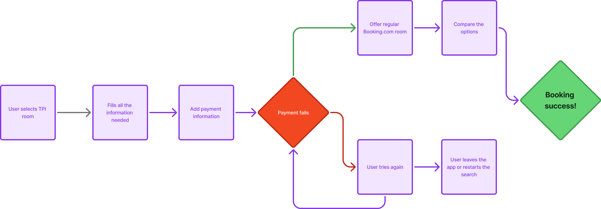
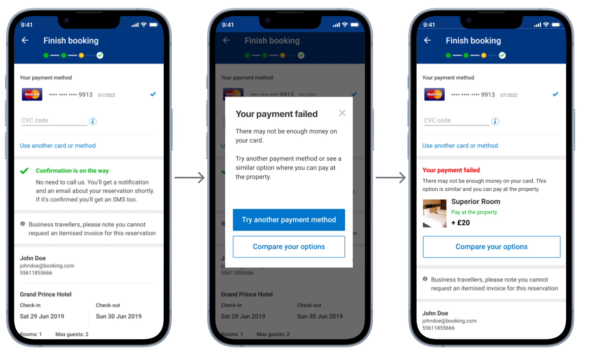
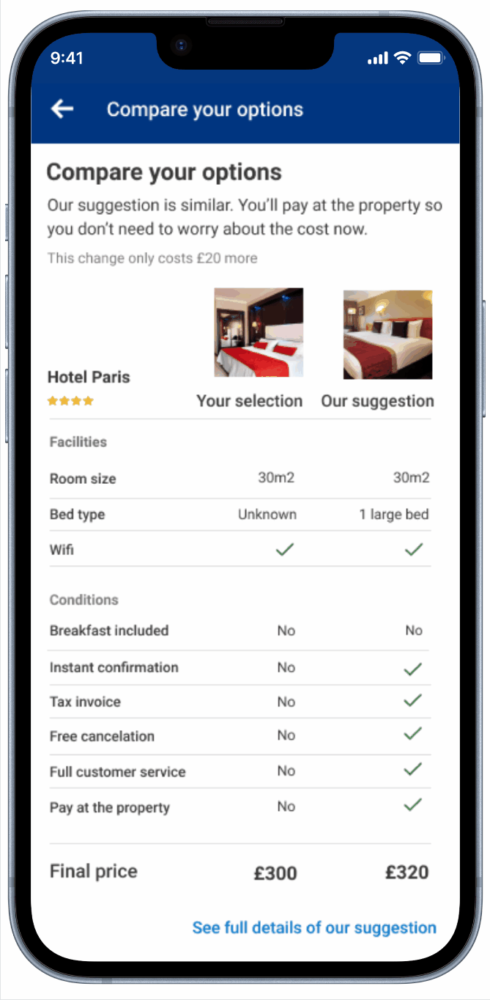
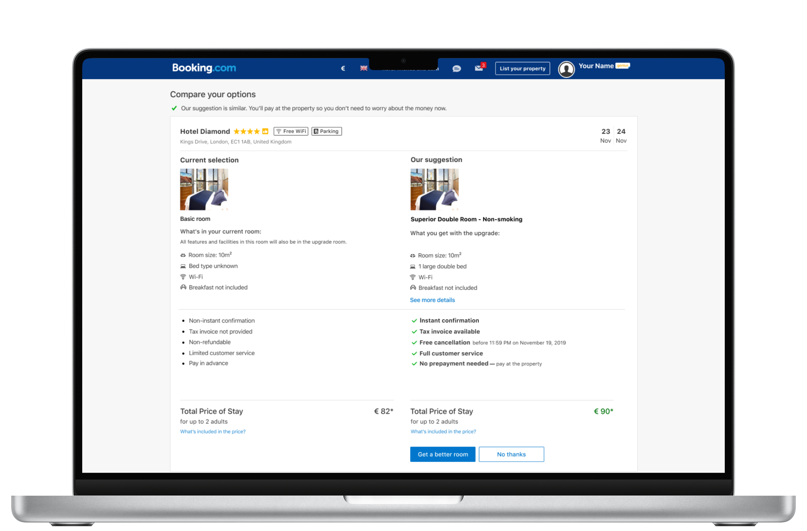
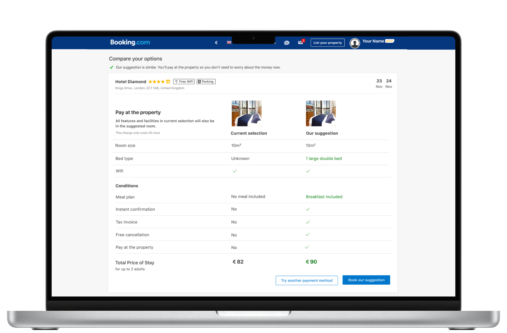
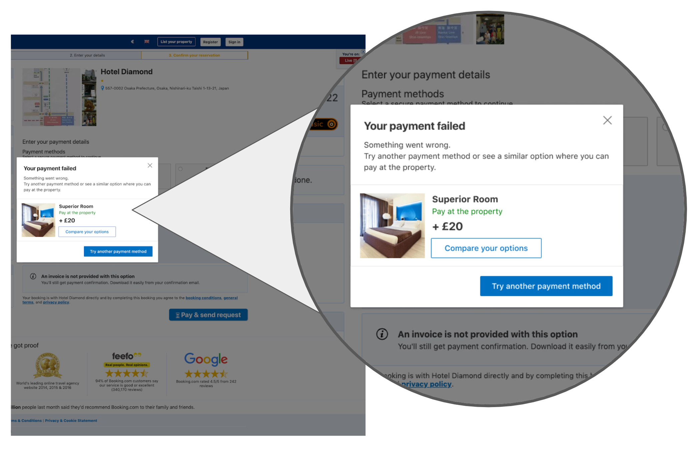

Increasing Conversion Through TPI Payment Failure Recovery
A recovery flow that offers users a comparable Booking.com room immediately after a third-party inventory payment fails, giving them a path forward instead of a dead end.
TPI rooms attracted users with lower prices but payment failures were common. When they happened, users hit a generic error with no next step. Between 18% and 33% of those users abandoned the platform entirely.
End-to-end UX across mobile and desktop: user flow redesign, prototype iteration, usability testing on UserTesting.com, copy direction, and final design specs for both platforms.
Started with a JTBD framing to anchor the design in the user's real need. Ran rapid prototyping cycles with real users, iterating from an overloaded comparison layout down to a focused, scannable table over four versions.
Positive net conversion uplift on both app and web. Drop-off after failed payments decreased significantly. High engagement rates on the comparison module, including image clicks and detail views, confirmed the design was working.

The final shipped design on both platforms. A structured comparison table that let users make a clear decision without leaving the booking flow.
A product improving conversion by selling someone else's rooms
Booking.com offered third-party inventory (TPI) rooms sourced from providers like Agoda and other OTAs alongside its own native inventory. The appeal was straightforward: TPI rooms were cheaper, and showing lower prices in search results drove more users through the funnel.
The trade-offs were real and disclosed upfront. TPI bookings required advance payment, were non-refundable, didn't issue invoices, had limited payment method support, and received reduced customer service since the reservation was ultimately owned by the third-party provider. Users who understood and accepted those conditions converted. The problem lived further downstream.
The limited payment method support built into TPI rooms wasn't a technical edge case. It was a structural characteristic of the model — making payment failures a predictable, recurring event in the booking funnel.
When payment failed, the experience simply stopped
The existing error state was a modal with a single message: "We're sorry, we have not been able to take your payment." One button: OK. No guidance, no alternatives, no next step. From the user's perspective, the booking was over and they had to start from scratch.

The original experience. A user who had already chosen their hotel, filled in their details, and entered payment information was met with a dead end and no recovery path.
Analytics and research confirmed the impact. Between 18% and 33% of users who encountered a TPI payment failure abandoned the platform entirely, either leaving the app or restarting their search from zero. That range was significant enough to warrant a dedicated project, and large enough that even modest improvement would translate directly to revenue at scale.
The failure was predictable, the scale was measurable, and we had a product lever worth pulling: Booking.com's native inventory offered "pay at the property" as a standard option. That was the seed of the recovery concept.
Starting with the job, not the interface
Before touching the design, I framed the problem around what users actually needed in that moment. The JTBD was direct: when my payment fails, I want a clear and trustworthy alternative so I don't have to start over and risk losing my booking. That framing shaped everything. The goal wasn't to show an upsell. It was to reduce the perceived cost of failure and keep booking momentum alive.
I mapped the current flow against the proposed recovery flow to get cross-functional agreement before designing. The before state was a linear dead end. The after state introduced a branch: when payment fails, offer a comparable Booking.com room with pay-at-property. Users could either take the suggestion or try their payment again, with a clear path in both directions.

The original flow. A linear path with no recovery after payment failure.

The proposed flow. Turning the payment failure into a decision point with two clear paths: accept the alternative room, or try the payment again.
With the flow approved, I moved into prototyping. I used UserTesting.com to test each iteration with real users, keeping cycles short. The feedback pattern across early sessions was consistent: users in a payment failure state were already frustrated. Any interface that added cognitive load made things worse. That insight drove every subsequent iteration.
Four iterations to get to something that actually worked
The first prototype for mobile followed the existing room options design guidelines closely: a side-by-side comparison with color-coded differences. Users found it overwhelming. Many didn't register it as a comparison at all, and several weren't sure the two rooms were from the same hotel. The color coding added noise instead of clarity.

The first major improvement: replacing the dead-end modal with an inline recovery message that surfaced an alternative room directly in context. This kept users in the flow instead of forcing them to dismiss an error and start over.
Iteration two removed the color cues and simplified the type hierarchy. Better, but the information volume still overloaded users who were already in a frustrated state. Iteration three went further, showing only the essential differences and tightening the copy significantly. Users responded better, but two concerns kept surfacing in tests: they couldn't confirm both rooms were from the same hotel, and they wanted to see photos.


Iterations on the mobile comparison screen. Left: the more detailed early version showing facilities side by side. Right: a cleaner iteration reducing noise, though users still asked about hotel context and photos.
The original headline "Your payment didn't work" was consistently triggering premature exits. Users read it as a signal the process had failed permanently, not as a prompt to take a different action. Reframing the message with a more forward-looking tone changed how users engaged with everything that followed it.

The mobile recovery flow in action. After a failed payment, users are shown a clear alternative with hotel name, room photo, and key conditions — without leaving the booking context.
Desktop followed a parallel arc
The first desktop version used two split columns with green highlights to call out differences. Like the early mobile version, it required too much scanning and didn't clearly signal that both options were from the same hotel. The large room photos intended to add visual weight became a liability when suggested rooms had weaker photography.


Desktop iterations one and two. The shift from split cards to a unified container immediately resolved the "are these from the same hotel?" confusion, but hierarchy and whitespace still needed work.
The final version borrowed the table pattern from the app: left-aligned labels, horizontal dividers, and a clean two-column structure for comparison. Users appreciated the clear conditions section and could preview the suggested room via image click, which opened a detail view without leaving the screen. Primary CTAs — "Book our suggestion" and "Try another payment method" — were streamlined to reduce friction. The user could complete the booking without re-entering any payment information.

The final desktop design. A structured table made scanning fast, the hotel name at the top resolved the trust issue, and the two-CTA pattern gave users a clear choice without over-explaining. Shipped version.
A recovery component was also added to the payment screen itself, so users who chose to retry their payment could still see the alternative without navigating away. That kept the fallback visible without making it the dominant message.

The payment failure dialog with the inline upsell component. Users saw the alternative directly in the error state, with a clear path to compare options or try another payment method.
A reliable conversion lift from a moment that used to lose users entirely
The solution launched on both app and web. A/B test results confirmed a positive net conversion uplift across platforms, meaning the recovery flow wasn't just retaining users who would have found their way back anyway — it was generating bookings that otherwise would not have happened.
Drop-off after failed payments decreased significantly. Net conversion was positive on both app and web. High engagement on the comparison module — image clicks, detail views, scroll depth — confirmed users were reading and acting on the suggestion rather than dismissing it.
The mechanics behind the result were straightforward in hindsight. Reducing cognitive load at a high-frustration moment, making the alternative feel trustworthy with photos and hotel context, and keeping the booking flow intact with no re-entry of information lowered the friction cost of accepting the suggestion to near zero.

Actual screenshot from the A/B testing tool showing the results after the upselling feature went full-on. These metrics confirmed that the design not only solved the problem: it delivered measurable results at scale. Blurred sensitive data for portfolio purposes.
Looking back, the main thing I would change is the sequencing of the research synthesis. By the time I brought in the room selection team to discuss deviating from the design pattern in iteration two, they had already built a strong internal model of what worked in room comparisons. Getting them in earlier would have saved at least a week of back-and-forth and might have shortened the iteration count on desktop.